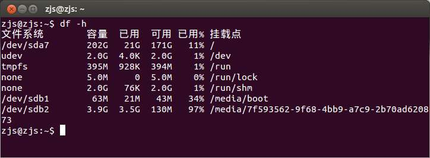
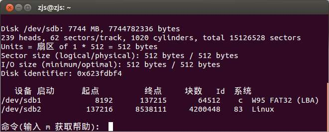
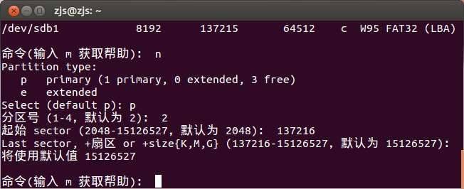

今天遇到一个问题，就是使用树莓派（其实是香蕉派，无所谓）的时候，提示说磁盘空间不足。当然，所说的磁盘就是SD卡了。
我一看，一个8GB的SD卡，/root分区只用了10GB，还有一大堆空闲扇区处于分区之外。这是因为树莓派官方给的镜像里面的分区大小只有10GB。所以我想到了扩容。如何在不损坏逻辑文件的情况下增大分区呢？百度了一番，找到了与我情况最最相近的一篇博客《使用fdisk e2fsck resize2fs调整Linux分区大小 》，按照他的方式试验了一番，果然可以，在此感谢作者azure190。
我以树莓派官方给的镜像文件2016-11-25-raspbian-jessie.img（下载2016-11-25-raspbian-jessie.zip解压可以得到）为例来做示例实验。
本实验全程都是在电脑上完成的，其实不需要用到树莓派，而且方法对于硬盘、U盘都是通用的。
在电脑上插入SD卡后，我的SD卡被标记为/dev/sdb。如果里面有文件系统，就会被自动挂载。在刷镜像之前，先把挂载的分区卸载掉：
sudo umount /dev/sdb1 sudo umount /dev/sdb2
使用dd命令把2016-11-25-raspbian-jessie.img刷到一张8GB的SD卡中：
dd if=2016-11-25-raspbian-jessie.img of=/dev/sdb bs=4M
执行完之后，重新。启动之后，使用如下命令查看磁盘分区及大小：
df -h
得到如下输出：

/dev/sdb1是63M，/dev/sdb2是3.9G。而我的SD卡有8GB，后面的4G就空着了。所以我希望把/dev/sdb2扩大，把SD卡剩下的空间全部利用上。这就要涉及到分区表的修改，还要保证文件不被破坏。
首先，卸载掉这两个分区：
sudo umount /dev/sdb1 sudo umount /dev/sdb2
然后
sudo fdisk /dev/sdb
输入p，回车，可以看到下图：

记录下sdb2的“起点”，这里是137216。
然后输入d，回车，再输入2，回车，那么就删除了2号分区，也就是sdb2。此时可以看一下分区表（输入p，回车），只剩sdb1了。
接下来输入n，回车，表示要新建分区。fdisk要求选择是主分区还是扩展分区。这里选择主分区，即输入p，回车。接着输入2，回车，表示创建sdb2。然后输入起始扇区，我们把刚刚记录的137216填写进去。然后输入结束扇区，可以使用默认值，也就是最后一个扇区。过程如图：

最后，输入w，回车，把修改后的分区表写入SD卡即可。
输入命令：
sudo e2fsck -af /dev/sdb2 sudo resize2fs /dev/sdb2
以修复可能存在的文件系统问题。
重新挂载一下SD卡，会发现/dev/sdb2已经变成7.7GB了～